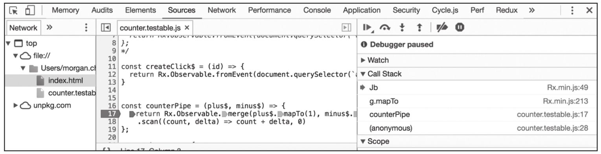

说到调试，读者可能最先想到的就是“调试器”（Debugger），一个可以在代码中设置断点的工具，利用Debugger，还可以在代码执行到断点之后，利用Step In、Step Over、Step Out等指令来控制代码执行，在代码执行过程中，还可以看到当前调用栈上的变量的值。
除了几款国产浏览器之外，几乎所有的现代浏览器都自带调试器，即使不带调试器，也会有插件支持调试功能，利用这个工具，可以很方面地控制代码执行，从而发现代码中潜在的问题。

图12-1 Chrome浏览器的调试界面
不过，有个坏消息：这些Debugger对于RxJS，基本没有什么大的帮助。为什么会这样呢？
首先，RxJS中最核心的Observable，是一个抽象的概念，不同于原生的JavaScript数据结构。Observable是一个复杂的类，即使你在某行代码上带上了断点，当你跟踪下去之后，很容易发现自己跟踪进了RxJS的实现代码，这是一些不容易看懂的代码，而且和你的应用完全没有关系，实在不值得在这样的代码迷宫里探索。
其次，RxJS代码多会涉及异步操作，在异步操作中，使用传统Debugger的Step In、Step Over方法是无法跟踪下一步的，这一点即使对于很简单的JavaScript代码，Debugger也完全无用武之地。
总之，对使用RxJS的代码进行调试，不要指望传统的Debugger能帮上什么大忙。
既然用不上Debugger，那么我们就很自然把目光转向另一个很常用、也很传统的调试手段，在代码中通过打印输出一些日志（log）来发现代码运行的状态，俗称“打log”。